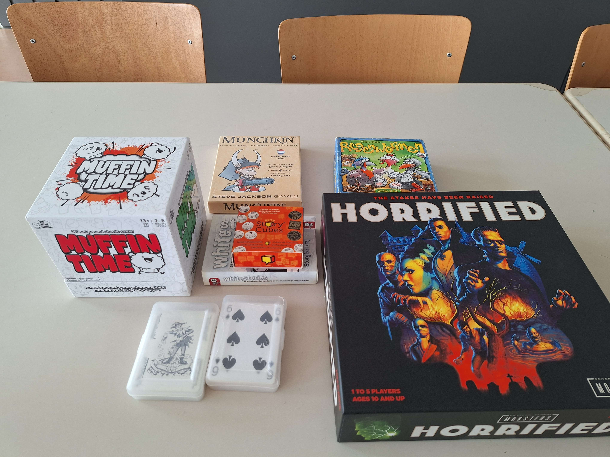
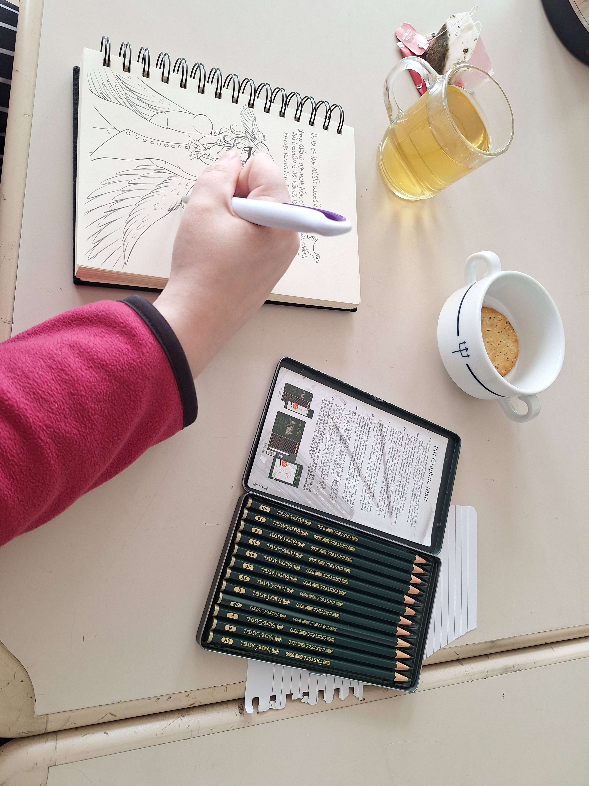

Elk weekend organiseren wij een gezellige middag/avond voor queer en neurodiverse jongeren/jong volwassenen in Amersfoort. We doen samen spelletjes, kletsen, kijken films en eten samen. Er is ook ruimte om zelf een activiteit te organiseren.

Met subsidie van de gemeente Amersfoort is het voor ons mogelijk om een eigen ruimte te huren zonder daar entree voor te vragen. Het prettige van een eigen ruimte is dat je bij ons veilig kan experimenteren met jouw identiteit.